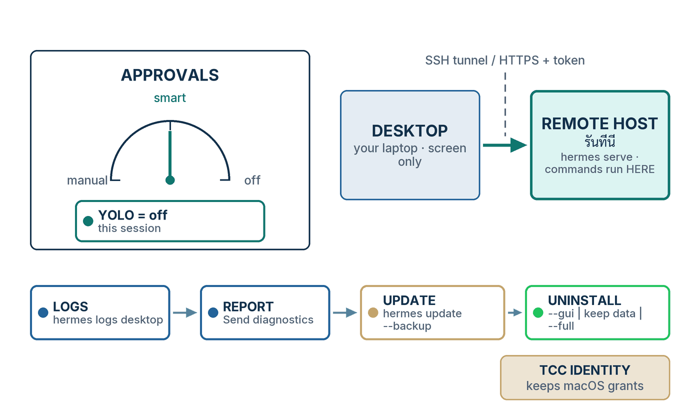

ในบทความนี้
- 1. สามหน้าปัดที่ทำให้ desktop agent ปลอดภัย
- 2. ขั้นตอน — ตั้ง approvals และ deny rules
- 3. Checkpoints และ /rollback — ทางถอยที่ต้องมีก่อนจะต้องใช้
- 4. ขั้นตอน — ต่อ Desktop เข้ากับ Hermes บนเครื่องอื่น
- 5. ตารางอ้างอิง — เมื่อมันพัง
- 6. Logs และ diagnostics — อ่านที่ไหน ส่งอะไร ให้ใคร
- 7. Update และ uninstall สามระดับ
- 8. สรุป — ปิดซีรีส์
In this post
- 1. Three Dials That Keep a Desktop Agent Safe
- 2. Procedure — Set Approvals and Deny Rules
- 3. Checkpoints and /rollback — a Way Back Before You Need One
- 4. Procedure — Attach the Desktop to a Hermes on Another Machine
- 5. Reference Table — When It Breaks
- 6. Logs and Diagnostics — Where to Read, What to Send, and to Whom
- 7. Update, and the Three Ways to Uninstall
- 8. Summary — Closing the Series
🤔 ถ้า agent ที่คุณติดตั้งไว้เมื่อหกตอนก่อน สั่ง recursive delete ผิดไดเรกทอรีตอนตีสอง — อะไรกันแน่ที่จะหยุดมันได้? และถ้าเช้าวันรุ่งขึ้นแอปเปิดไม่ขึ้น คุณจะไปดูที่ไหนก่อน?
ตอนที่แล้ว #6 Automation & Agents ทิ้ง agent ที่ทำงานตอนคุณไม่อยู่ไว้ให้ — cron jobs, Bot Mode routines, subagents ที่บังคับทิศได้กลางทาง agent ที่ทำงานโดยไม่มีใครเฝ้า คือ agent ที่ต้องการสามสิ่งซึ่งวันแรกยังไม่จำเป็น: รั้วที่มันพูดหว่านล้อมให้เปิดไม่ได้ คำตอบชัด ๆ ว่า "คำสั่งนี้กำลังรันอยู่บนเครื่องไหน" และทางกลับเมื่อบางอย่างพัง
คำตอบหนึ่งบรรทัด: หน้าปัดสามอัน — โหมด approvals, write guards กับ hardline blocklist, และเส้นแบ่งการรันคำสั่ง (execution boundary) — บวกบันไดกู้คืนที่เริ่มจาก hermes logs desktop ไปจบที่ uninstall สามระดับ นี่คือตอนสุดท้ายของซีรีส์ และเป็นคู่ลงมือทำของ #4 Security: ตอนนั้นเป็นเจ้าของ threat model ตอนนี้เป็นเจ้าของสิ่งที่คุณคลิก พิมพ์ และตรวจ
1. สามหน้าปัดที่ทำให้ desktop agent ปลอดภัย
desktop agent ปลอดภัยได้ด้วยการตั้งค่าสามตัวที่เรียกชื่อได้ approvals.mode — smart, manual หรือ off — ตัดสินว่ามนุษย์จะได้เห็นคำสั่งอันตรายก่อนมันรันหรือไม่ write guards กับ hardline blocklist ปฏิเสธของชุดเล็ก ๆ ชุดหนึ่งโดยไม่สนโหมด และ execution boundary ตัดสินว่าเครื่องไหนเป็นคนรันคำสั่งจริง ๆ ปุ่มอื่นทุกปุ่มบนหน้า Safety คือรายละเอียดปลีกย่อยของหนึ่งในสามอย่างนี้[1]
{kind=link}

หน้าปัดที่หนึ่ง — โหมด approvals
ก่อนคำสั่ง shell จะรัน Hermes เทียบมันกับรายการรูปแบบอันตราย — recursive delete, chmod 777, mkfs, SQL DROP, การ pipe ของที่ดาวน์โหลดมาเข้า shell, การ kill gateway และอีกราวสามสิบรูปแบบ ถ้าตรง คำสั่งจะถูกส่งไปชั้น approval และ approvals.mode คือตัวบอกว่าจะเกิดอะไรขึ้นที่นั่น[1] ใน smart (ค่าเริ่มต้น) LLM ตัวช่วยจะประเมินความเสี่ยง: คำสั่งความเสี่ยงต่ำถูกอนุมัติอัตโนมัติเฉพาะคำสั่งนั้น คำสั่งที่อันตรายจริงถูกปฏิเสธอัตโนมัติ และกรณีก้ำกึ่งส่งขึ้นมาถามคุณ manual ถามคุณทุกครั้ง off ปิดการตรวจทั้งหมด — เอกสารบอกว่าเทียบเท่ากับการรันด้วย --yolo[1]
มีเพื่อนร่วมทางสองตัวที่สำคัญไม่แพ้โหมดเอง บริบทที่ไม่มีคนเฝ้า (headless) มีสวิตช์ของตัวเอง — cron_mode, single_query_mode และ unattended_mode ทั้งหมดตั้งต้นเป็น deny ดังนั้น cron job หรือ webhook session ที่ชนรูปแบบอันตรายจะถูกบล็อก แทนที่จะรอมนุษย์ที่ไม่ได้อยู่ตรงนั้น[1] และ prompt ขออนุมัติมีนาฬิกา: ถ้าไม่มีใครตอบภายใน timeout (300 วินาทีโดยค่าเริ่มต้น) คำสั่งจะถูกปฏิเสธ เอกสารเรียกคุณสมบัตินี้ว่า fail-closed และเป็นคุณสมบัติที่ผมตรวจก่อนอย่างอื่นบนเครื่องใดก็ตามที่ถือ credential จริง[1]
หน้าปัดที่สอง — write guards และ hardline blocklist
การปฏิเสธบางอย่างไม่ขึ้นกับโหมดเลย write_file และ patch ถูกบล็อกแข็งจากที่เก็บ credential — ~/.ssh/, ~/.aws/, ~/.kube/, /etc/sudoers, ~/.netrc, auth.json กับ .env ของ Hermes เอง, mcp-tokens/, pairing/ และไฟล์ .env ไม่ว่าจะอยู่ที่ไหนบนดิสก์ — โดยไม่มี prompt และ override จากหน้าแชตไม่ได้ ถ้าคุณอยากได้รั้วมากกว่า denylist HERMES_WRITE_SAFE_ROOT จำกัดเครื่องมือสองตัวนั้นให้เขียนได้เฉพาะไดเรกทอรีที่คุณระบุ[1] เหนือขึ้นไปคือ hardline blocklist: rm -rf / และตัวแปรของมัน, bash fork bomb, mkfs บนอุปกรณ์ root ที่ mount อยู่, dd ลงดิสก์จริง และการ pipe URL ที่ไม่น่าเชื่อถือเข้า sh มันสะดุดก่อนชั้น approval จะเห็นคำสั่งเสียอีก รอด --yolo, approvals.mode: off, โหมด approve ของ cron และการคลิก "allow always" ได้ทั้งหมด และไม่มี flag ให้ override[1]
ระหว่างสองอย่างนั้นคือหน้าปัดที่คุณหมุนจริง ๆ: approvals.deny รายการ glob pattern ที่บล็อกคำสั่งที่ตรงกันโดยไม่มีเงื่อนไข — ก่อน YOLO และก่อน mode: off จะถูกถามด้วยซ้ำ เอกสารเรียกมันว่า yolo-with-exceptions: ให้ agent ทำได้ทุกอย่าง ยกเว้นสิ่งเหล่านี้ ตลอดไป[1]
หน้าปัดที่สาม — execution boundary
หน้าปัดที่สามคืออันที่คนลืม เพราะมันไม่ได้อยู่บนหน้า Safety terminal.backend บอกว่าคำสั่ง shell รันที่ไหน: local และ ssh ยังเปิดการตรวจคำสั่งอันตราย ส่วน docker, singularity, modal, daytona และ vercel_sandbox ข้ามการตรวจไป เพราะ container เองคือเส้นแบ่ง[1] การเชื่อมต่อแบบ Remote gateway ย้ายไปไกลกว่า backend README ของแอป desktop เองพูดไว้ในประโยคเดียวที่ผมขอยกมาทั้งประโยคแทนการถอดความ: "In remote mode the gateway host is the execution boundary: agent tools, terminal commands, and file operations run against the remote Hermes host, not the computer displaying the Desktop UI."[9] หัวข้อ 4 คือขั้นตอนของสิ่งนั้นพอดี
💡 ทฤษฎีอยู่ที่ไหน: นโยบายความปลอดภัยของ repository ระบุเส้นแบ่งที่รับน้ำหนักไว้เพียงเส้นเดียว และ §2.2 กล่าวมันด้วยประโยคที่กำกับหน้าปัดทั้งสาม — "The only security boundary against an adversarial LLM is the operating system." ชั้น approval, การ redact และ scanner ทุกตัวถูกเรียกในนั้นว่า heuristic: มีประโยชน์ แต่ไม่ใช่การกักกัน[8] #4 Security เดินผ่านนโยบายนั้นทีละชั้น และครอบคลุมกรณีที่ใกล้ตัวคนไทยที่สุด — Hermes instance ในโหมด YOLO ที่รันโดยไม่มีคนเฝ้าในเครือข่ายหน่วยงานรัฐ ผมจะไม่เล่าซ้ำที่นี่ อ่านที่นั่น แล้วกลับมาหมุนหน้าปัด
2. ขั้นตอน — ตั้ง approvals และ deny rules
ตั้งโหมดที่ Settings → Safety เพิ่ม deny rules สำหรับคำสั่งที่ไม่อยากเห็นเลย ปล่อย timeout 300 วินาทีไว้ให้มัน fail closed หาปุ่ม YOLO ในแถบสถานะให้เจอเพื่อจะจำได้ตอนมันเปิดอยู่ แล้วทดสอบด้วยคำสั่งที่รู้ว่าถูกตั้งธง ขอบันทึกความซื่อตรงไว้ก่อนหนึ่งข้อ: เอกสารทางการระบุ Safety ไว้ในรายการหน้า settings รายโปรไฟล์ แต่ไม่เคยอธิบายว่าในหน้านั้นมีอะไร ขั้นตอนข้างล่างจึงเรียกชื่อคีย์ในไฟล์ config — หน้าจอสะท้อนคีย์เหล่านั้น[2]
- เปิด Settings ด้วย
Cmd/Ctrl+,แล้วเลือก Safety ถ้ามีสองโปรไฟล์ขึ้นไป แถวชิป Applies to จะโผล่ที่หัวหน้า ค่าเริ่มต้นตามโปรไฟล์ที่ใช้งานอยู่ และการสลับโปรไฟล์หลักของแอปจะรีเซ็ตมัน ดังนั้นเลือกโปรไฟล์ที่ตั้งใจก่อนแตะอะไร[2] - เลือกโหมด approval —
smart,manualหรือoffกฎของผมเอง:manualบนเครื่องที่ถือ credential จริงจนกว่าจะไว้ใจ workflow นั้นsmartสำหรับงานประจำวัน และoffเฉพาะใน container ที่ทิ้งได้เท่านั้น[1] - ถ้าอยากแก้ไฟล์มากกว่า คีย์ชุดเดียวกันอยู่ใต้
approvals:ใน~/.hermes/config.yamlการเปลี่ยนมีผลทันที — cache ของ config อิงเวลาที่ไฟล์ถูกแก้ — จึงไม่ต้องเริ่ม session ใหม่[1] - เพิ่ม deny rules สำหรับสิ่งที่ห้ามรันไม่ว่าโหมดไหน ใส่เครื่องหมายคำพูดครอบทุก pattern —
*นำหน้าเปล่า ๆ เป็น YAML alias และ parse ไม่ผ่าน — และจำไว้ว่ามันจับคู่แบบไม่สนตัวพิมพ์เล็กใหญ่กับข้อความคำสั่งทั้งบรรทัด และมีผลกับ backend ที่แตะ host ได้เท่านั้น[1] - ปล่อย
timeout: 300ไว้ เมื่อ prompt ถูกทิ้งไว้ไม่มีคำตอบนานเท่านั้น คำสั่งจะถูกปฏิเสธ ตัวเลขที่ต่ำลงทำให้การเดินไปชงกาแฟปลอดภัยขึ้น ไม่ใช่เสี่ยงขึ้น[1] - หาปุ่ม YOLO มันอยู่ในแถบสถานะด้านล่างหน้าแชต และเป็นรายการต่อ session — "flip YOLO on or off for just this session (matching the TUI)"[2] สวิตช์เดียวกันมีอีกสามวิธีเขียน:
/yoloในแชต,hermes --yoloตอนเปิด หรือHERMES_YOLO_MODE=1ใน environment เมื่อมันเปิด ตัวสลับจะพิมพ์⚡ YOLO mode ON — all commands auto-approved. Use with caution.ทุก session ถัดไปจะเปิดด้วยแถบสีแดง⚠ YOLO mode — all approval prompts bypassedและชิ้นส่วน⚠ YOLOค้างอยู่ในแถบสถานะจนกว่าคุณจะปิดมัน[1] - ทดสอบ — ในโหมด
manualเพราะsmartอาจตัดสินว่าการลบไดเรกทอรีชั่วคราวเป็นความเสี่ยงต่ำแล้วปล่อยผ่าน ขอให้ agent ลบไดเรกทอรีชั่วคราวแบบ recursiverm -rf /tmp/hermes-testเป็น recursive delete ซึ่งเป็นหนึ่งในรูปแบบที่ถูกตั้งธง จับตาดู prompt ขออนุมัติ: ชื่อรูปแบบ คำสั่งตรง ๆ และตัวเลือกสี่อย่าง once, session, always, deny เอกสารแสดงหน้าตาของ CLI ส่วน Desktop เสนอการตัดสินใจชุดเดียวกัน ถ้าคำสั่งรันโดยไม่ถาม แปลว่า YOLO เปิดอยู่หรือโหมดเป็นoff[1] (บันทึกการออกรุ่น v0.21.0 ระบุตัวตรวจคำตัดสิน approval แบบ dry-run สำหรับ CLI แต่ยังไม่อยู่ในเอกสารอ้างอิง CLI ผมจึงทดสอบในแชตแทน[10]) - ทางเลือก: ผ่านไปสองสามสัปดาห์ค่อยรัน
hermes approvals suggestมันขุดคำสั่งที่คุณเคยอนุมัติจากฐานข้อมูล session มาเป็นข้อเสนอ allowlist ไม่ apply อะไรเลยถ้าไม่ส่ง--applyและไม่เคยเสนอกลุ่มคำสั่งทำลายล้าง —rm -rf build/ที่อนุมัติมาร้อยครั้งก็ยังไม่ได้รายการrm[1]
บล็อก approvals: ยกมาตรง ๆ จากหน้า Security:
# ~/.hermes/config.yaml
approvals:
mode: smart # smart | manual | off
timeout: 300 # วินาทีที่รอคำตอบจากผู้ใช้ (ค่าเริ่มต้น: 300)
cron_mode: deny # deny | approve — cron job ทำอย่างไรเมื่อชนคำสั่งอันตราย
single_query_mode: deny # deny | approve — session แบบ single-query (-q) ทำอย่างไรเมื่อชนคำสั่งอันตราย
unattended_mode: deny # deny | approve — session จาก webhook/API ทำอย่างไรเมื่อชนคำสั่งอันตราย
mcp_reload_confirm: true # /reload-mcp ถามก่อนล้าง cache ของ MCP tool
destructive_slash_confirm: true # /clear, /new, /reset, /undo ถามก่อนทิ้ง stateและ deny rules โดยใช้ตัวอย่างสามข้อของเอกสารเอง:
# ~/.hermes/config.yaml — ถูกถามก่อน --yolo, /yolo และ approvals.mode: off
approvals:
deny:
- "git push --force*"
- "*curl*|*sh*"
- "dd if=* of=/dev/*"approvals.deny ของคุณคืออีกสิ่งเดียวที่รอดจากมัน เพราะถูกถามก่อน มันเป็นรายการต่อ session มันคือหนึ่งคลิกในแถบสถานะ และมันคือสวิตช์ที่ #4 บันทึกไว้ว่าถูกใช้แบบไม่มีคนเฝ้าในเครือข่ายจริง อย่าเปิดมันในที่ที่ agent เอื้อมถึง credential ที่คุณไม่อยากเสีย[1]
execution backend
หน้าปัดที่สามตั้งใน ~/.hermes/config.yaml ใต้ terminal.backend ผมหาหน้าเอกสาร Desktop ที่บันทึกปุ่มควบคุมสำหรับมันไม่เจอ จึงแก้ไฟล์แล้วเริ่ม session ใหม่หลังจากนั้น ค่าเจ็ดค่าคือค่าที่อยู่ในตารางเปรียบเทียบของหน้า Security:[1]
# ~/.hermes/config.yaml
terminal:
backend: docker # local | ssh | docker | singularity | modal | daytona | vercel_sandbox
# local และ ssh ยังตรวจคำสั่งอันตราย อีกห้าตัวข้ามการตรวจ3. Checkpoints และ /rollback — ทางถอยที่ต้องมีก่อนจะต้องใช้
Checkpoints คือปุ่ม undo ของ agent สำหรับระบบไฟล์ และมันเป็นแบบ opt-in: ค่าเริ่มต้นคือปิด เพราะ shadow store กินดิสก์เมื่อเวลาผ่านไป และผู้ใช้ส่วนใหญ่ไม่เคยพิมพ์ /rollback เปิดด้วย checkpoints.enabled: true ใน config.yaml (หรือ hermes chat --checkpoints สำหรับ CLI session เดียว) แล้ว Hermes จะถ่ายภาพโปรเจกต์ก่อน write_file, patch และคำสั่ง shell ที่ทำลายล้าง /rollback <N> กู้ไฟล์กลับและถอนเทิร์นสนทนาล่าสุด เพื่อให้บริบทของ agent ตรงกับดิสก์อีกครั้ง[6]
# ~/.hermes/config.yaml — opt-in; shadow store อยู่ที่ ~/.hermes/checkpoints/store/
checkpoints:
enabled: true
max_snapshots: 20 # ต่อโปรเจกต์
max_total_size_mb: 500 # เกินนี้ commit เก่าสุดถูกทิ้ง
max_file_size_mb: 10 # ไฟล์ใหญ่กว่านี้ถูกข้าม ไม่ถูกถ่ายภาพกลไกคุ้มค่าสามสิบวินาที เพราะมันอธิบายขีดจำกัด ทุกโปรเจกต์ใช้ bare git repository ร่วมกันหนึ่งตัวใต้ ~/.hermes/checkpoints/store/ — .git จริงของคุณไม่ถูกแตะ — และ agent ถ่าย checkpoint ได้อย่างมากหนึ่งครั้งต่อไดเรกทอรีต่อเทิร์น ตัวกระตุ้นคือเครื่องมือไฟล์บวก rm, rmdir, cp, install, mv, sed -i, truncate, dd, shred, การ redirect output และ git reset/clean/checkout ไดเรกทอรีที่มีไฟล์เกิน 50,000 ไฟล์ รวมถึง root และ home ถูกข้าม และถ้า git ไม่อยู่บน PATH checkpoints จะปิดตัวเองเงียบ ๆ[6]
/rollback # ดูรายการ checkpoint พร้อมสถิติการเปลี่ยนแปลง
/rollback diff 1 # ดูก่อนว่าอะไรเปลี่ยนไปตั้งแต่ checkpoint 1 — ทำข้อนี้ก่อน
/rollback 1 # กู้ checkpoint 1 โดยเก็บสิ่งที่คุณแก้เองด้วยมือไว้
/rollback 1 --all # กู้เต็มรูปแบบ ทับสิ่งที่คุณแก้เองด้วย
/rollback 1 src/app.py # กู้ไฟล์เดียว
hermes checkpoints # ขนาด store จำนวนโปรเจกต์ รายละเอียดรายโปรเจกต์
hermes checkpoints prune # กวาด orphan และบังคับเพดานขนาดรายละเอียดสองอย่างทำให้มันปลอดภัยกว่าที่ฟังดู การกู้จะถ่ายภาพก่อนกู้ (pre-rollback snapshot) ก่อนเสมอ คุณจึง undo การ undo ได้ และ /rollback <N> กู้เฉพาะไฟล์ที่ Hermes เขียนเอง — การเขียนที่สำเร็จทุกครั้งบันทึก hash เนื้อหาไว้ใน ledger การเขียนของ agent และไฟล์ที่คุณแก้ทีหลังจะถูกข้ามและถูกแจ้งไว้ในผลลัพธ์ เว้นแต่คุณเติม --all[6] หน้าเอกสาร checkpoints บันทึก /rollback เป็น slash command ใน session และแสดงผลลัพธ์ของ CLI ส่วนแชตใน Desktop คือ session บน backend ตัวเดียวกัน และผมไม่พบอะไรที่บอกว่ามันทำงานต่างออกไปที่นั่น — พิมพ์ในแชตได้เลย
~/.hermes config, session, key และ skill ถูกคุ้มครองด้วยกลไกคนละตัว — snapshot ก่อน update และ hermes update --backup ในหัวข้อ 7[5]
4. ขั้นตอน — ต่อ Desktop เข้ากับ Hermes บนเครื่องอื่น
บน host ตั้ง auth provider ให้พร้อมแล้วรัน hermes serve --host 0.0.0.0 --port 9119 การ bind กับ address ที่ไม่ใช่ loopback จะเปิด auth gate โดยอัตโนมัติ backend ที่ไม่มี provider จึงไม่ได้เปิดโล่งเฉย ๆ ใน Desktop ไปที่ Settings → Gateways → Add connection เลือก Remote gateway (URL บวก session token หรือ Nous Portal OAuth) หรือ SSH (key ของคุณ แอปเปิด tunnel และรับ dashboard token มาเอง) กด Test แล้วเปิด session — และจำไว้ว่านับจากวินาทีนั้นทุกคำสั่งรันบน host เครื่องนั้น[2][3]
บน host
- เลือก provider ตามที่ที่ host อยู่ username/password ใช้กับ LAN ที่เชื่อถือได้หรือ VPN อย่าง Tailscale เท่านั้น สำหรับอะไรก็ตามที่เข้าถึงได้เกินเครื่องของคุณเอง เอกสารแนะนำ OAuth ผ่าน Nous Portal — ลงทะเบียน backend ด้วย
hermes dashboard registerแล้ว sign in จากแอปด้วย "Sign in with Nous Research" OIDC provider ที่ host เองก็ทำงานแบบเดียวกัน[2] - สำหรับเส้นทาง username/password ต่อท้ายตัวแปรสามตัวลง
~/.hermes/.envตามที่เอกสารแสดงเป๊ะ ๆ แล้วสตาร์ต backend เก็บมันไว้ใต้systemdหรือtmux: แอปต่อเข้าหามันแต่ไม่เคยสตาร์ตให้ และ messaging gateway เป็นอีก process ที่คุณรันคู่กันเอง[2] - ตรวจ gate ก่อนยื่น URL ให้ใคร
curlไปที่ status endpoint จาก laptop ของคุณ: ควรพิมพ์trueและมี"basic"(หรือ OAuth provider ของคุณ)[2]
# บน host ระยะไกล
cat >> ~/.hermes/.env <<'EOF'
HERMES_DASHBOARD_BASIC_AUTH_USERNAME=admin
HERMES_DASHBOARD_BASIC_AUTH_PASSWORD=choose-a-strong-password
# แนะนำ: signing secret ที่คงที่ เพื่อให้ session อยู่รอดข้าม restart
# ถ้าไม่มี ระบบจะสุ่มคีย์ใหม่ทุกครั้งที่บูต แล้วคุณจะถูก log out
# ทุกครั้งที่ restart
HERMES_DASHBOARD_BASIC_AUTH_SECRET=$(openssl rand -base64 32)
EOF
chmod 600 ~/.hermes/.env
# การ bind ที่ไม่ใช่ loopback เปิด auth gate
hermes serve --host 0.0.0.0 --port 9119
# จาก laptop ของคุณ: gate เปิดจริงไหม?
curl -s http://<host>:9119/api/status | jq '.auth_required, .auth_providers'ใน Desktop
- เปิด Settings → Gateways (
Cmd/Ctrl+,แล้ว Gateways; หรือปุ่มปลั๊กที่ปลายขวาของแถบโปรไฟล์ "Connect another Hermes gateway…"; หรือCmd/Ctrl+Kแล้วพิมพ์ Gateways) เลื่อนลงไปที่ Registered gateways แล้วคลิก Add connection[3] - เลือกชนิด Remote gateway: ชื่ออุปกรณ์ที่ไม่ซ้ำ (ยาวได้ถึง 64 ตัวอักษร ไม่ซ้ำโดยไม่สนตัวพิมพ์เล็กใหญ่), Gateway URL ของ backend ที่รันอยู่ เช่น
http://homelab.lan:9119และ Session token หรือ OAuth SSH: ชื่อบวกช่องรวมช่องเดียวในรูปuser@host:22ระบบใช้ SSH key ของคุณ และแอปเปิด tunnel สตาร์ต dashboard ฝั่งโน้น แล้วรับ dashboard token ผ่าน tunnel มาเอง[3] - คลิก Save connection แล้ว Test บนแถวใหม่ Test ตรวจทั้งขา HTTP และขา WebSocket ดังนั้น toast "Reachable" หมายความว่าแชตจะใช้ได้จริง — ไม่ใช่แค่ host ตอบ ping[3]
- จะกด Make primary ก็ได้ Primary คือตัวสำรองของ registry สำหรับการเรียกข้าม gateway ที่ไม่ได้ระบุชื่อ gateway มันไม่สลับ workspace ของ Sessions ที่เปิดอยู่ และถ้าคุณลบมัน แอปจะถอยกลับไปใช้รายการ local[3]
- สลับไปที่ gateway จากแถบข้าง Sessions — ตัวเลือก gateway แบบมีชื่อจะโผล่เมื่อลงทะเบียนไว้มากกว่าหนึ่ง — เลือกโปรไฟล์ที่ค้นพบบนนั้น แล้วเปิด session ไฟล์ เครื่องมือ ช่องทาง cron และ memory ตอนนี้ผูกกับ
(gateway, profile)นั้น และประโยค execution boundary จากหัวข้อ 1 มีผลเต็มที่: laptop เป็นแค่จอ[3][9]
ทางลัดสองทาง HERMES_DESKTOP_REMOTE_URL ตั้งก่อนเปิดแอป จะ override URL ในแอป — คุณยังต้อง sign in จากหน้า Gateways[2] และสำหรับการต่อ remote เครื่องเดียว ปุ่ม Connection mode → Remote gateway บนหน้าเดียวกัน — Remote URL, Sign in, Save and reconnect — ทำงานเดียวกันได้โดยไม่ต้องผ่าน registry คุณจะยังคง sign in อยู่ข้าม restart ก็ต่อเมื่อตั้ง HERMES_DASHBOARD_BASIC_AUTH_SECRET ไว้[2]
5. ตารางอ้างอิง — เมื่อมันพัง
อ่าน log ก่อน แล้วค่อยดูตาราง ทุกแถวข้างล่างอ้างอิงหน้าเอกสาร บันทึกการออกรุ่น หรือ issue ที่ผมอ่านซ้ำเมื่อ 7 กันยายน 2026 อาการที่ผมหาแหล่งอ้างอิงไม่ได้ไม่อยู่ในนี้
| Symptom | First check | Command or menu | Fix |
|---|---|---|---|
| แอปเปิดไม่ขึ้น | HERMES_HOME/logs/desktop.log — output ของ backend และ Python traceback ล่าสุด[2] |
hermes logs desktop · hermes logs gui -f[4] |
บังคับให้ตั้งค่าครั้งแรกใหม่ด้วย rm "$HOME/.hermes/hermes-agent/.hermes-bootstrap-complete"; สร้าง venv ที่พังใหม่ด้วย rm -rf "$HOME/.hermes/hermes-agent/venv"; แล้ว hermes doctor --fix[2] |
ตัวติดตั้งค้างที่ "Build desktop app" output สดวนซ้ำ retrying attempt=… |
GitHub ถูกบล็อกหรือถูกจำกัดความเร็ว — การ build ดาวน์โหลด Electron runtime ราว 114 MB จาก github.com[2] | rm -f "$HOME/Library/Caches/electron"/electron-*.zip (macOS) · rm -f "$HOME/.cache/electron"/electron-*.zip (Linux) |
ตัวติดตั้งล้าง zip ที่เสียแล้วลองใหม่ผ่าน npmmirror.com ให้เอง ถ้าจะใช้ mirror ของคุณเอง ตั้ง ELECTRON_MIRROR ก่อน build ใหม่ — การ build ไม่เคยทับค่าที่คุณตั้ง[2] |
| ไม่มี session โหลดขึ้นมาในโปรไฟล์ไหนเลยหลัง update | Issue #89675 (P1): backend ถูก spawn โดยไม่มี --profile แอปจึงไปถาม store ที่ว่างเปล่า เป็น regression ใน v0.20.4[11] |
hermes --version |
ปิดในสถานะ completed เมื่อ 23 สิงหาคม 2026 ก่อน v0.21.0 — update; ทางเลี่ยงชั่วคราวของผู้รายงานคือ web dashboard ซึ่งจัดการโปรไฟล์ได้ถูกต้อง[11] |
| macOS ขอ Full Disk Access หรือไมโครโฟนใหม่ ทั้งที่ System Settings ยังแสดงสวิตช์เป็นเปิด | macOS ผูกสิทธิ์กับ code-signing identity ไม่ใช่ path แอปที่ build บนเครื่องใช้ลายเซ็นที่ปักด้วย identifier ที่คงที่และปกติจะอยู่รอด แต่สิทธิ์ที่ให้ไว้ก่อนการแก้ลายเซ็นนั้น (PR #73681) ปักด้วย cdhash และไม่ตรงอีกต่อไป[2] | hermes desktop --setup-tcc-identity[2] |
รีเซ็ตสิทธิ์ที่ค้างหนึ่งครั้ง — tccutil reset All com.nousresearch.hermes — แล้วให้สิทธิ์ใหม่ ถ้าอยากได้ identity ที่ยึดกับ certificate คำสั่งนี้จะสร้าง certificate แบบ self-signed ชื่อ "Hermes Local Signing" แล้ว sign แอปใหม่ สิทธิ์อยู่รอดทุก update นับจากนั้น (v0.21.0, #95091)[2][10] |
| Windows ค้างที่ "Updating Hermes" | hermes --version — ต่ำกว่า v0.21.0 (v2026.8.31) นี่คือการส่งต่อ update ของ Desktop เอง[10] |
ปิด Hermes Desktop แล้วรัน hermes update จาก PowerShell — มันปฏิเสธถ้ามี hermes.exe ตัวอื่น ซึ่งส่วนใหญ่คือ backend ที่ Desktop spawn ไว้ ถือไฟล์ executable ของ venv ค้างอยู่[5] |
การส่งต่อ update แบบ detached ของ v0.21.0 (quit → update → reopen ผ่านหน้าต่าง shim) กำจัดอาการค้างแล้ว: "Windows desktop updates no longer park on 'Updating Hermes'"[10] |
| Renderer กิน CPU 40–73 % ตอนว่างบน Intel Mac พัดลมดังสุด | Activity Monitor → Hermes Helper (Renderer); issue #88275 (P2 ยังเปิด) บน MacBook Pro 2019 รัน v0.20.2[12] |
ทางบรรเทาบางส่วนของผู้รายงานคือ desktop.disable_gpu=true — คีย์ที่ไม่มีในเอกสาร ซึ่งลดลงได้ราวครึ่งหนึ่ง[12] |
ยังไม่มีการแก้ที่ merge แล้ว ณ 7 กันยายน 2026 Intel Mac อยู่นอกตารางแพลตฟอร์มที่รองรับซึ่ง #10 ยกมาไว้ วางแผนเผื่อไว้[12] |
| Remote gateway ปฏิเสธการเชื่อมต่อหลัง sign in | curl -s http://<host>:9119/api/status | jq '.auth_required, .auth_providers' ต้องพิมพ์ true และชื่อ provider[2] |
Settings → Gateways → Open logs แล้วหา close code ของ /api/ws ใน desktop.log[7] |
4401 = ticket ของ WebSocket ยืนยันตัวตนไม่ผ่าน — sign in ใหม่และตั้ง HERMES_DASHBOARD_BASIC_AUTH_SECRET ให้คงที่; 4403 = request guard ปฏิเสธ มักเป็น Host หรือ peer ไม่ตรงกันหลัง proxy[7][2] |
| การเชื่อมต่อ SSH: "The host key has CHANGED since you last connected" | เครื่องปลายทางถูกติดตั้งใหม่หรือ key ถูกหมุน SSH fail closed และ Desktop ล็อกหน้า error overlay ค้างไว้[2] | ssh-keygen -R <host> |
ยืนยันว่าการเปลี่ยนเป็นสิ่งที่คาดไว้ ล้างรายการเก่า แล้วคลิก Retry บน overlay[2] |
| "Connection test failed" บน gateway ที่ลงทะเบียนไว้ | hermes serve รันอยู่บน host ไหม พอร์ตเปิดไหม token ยังใช้ได้ไหม[3] |
Test บนแถวนั้น ถ้า HTTP ผ่านแต่ขา WebSocket ตก ชี้ไปที่ proxy, firewall หรือ origin guard บน /api/ws |
แก้ฝั่ง backend รัน Test ซ้ำ รอ "Reachable"[3] |
6. Logs และ diagnostics — อ่านที่ไหน ส่งอะไร ให้ใคร
log ทั้งหมดอยู่ใน ~/.hermes/logs/ (หรือ <profile>/logs/ สำหรับโปรไฟล์ที่ไม่ใช่ default) และ hermes logs อ่านได้ห้าไฟล์ตามชื่อ: agent (ค่าเริ่มต้น — การเรียก API, การส่งเครื่องมือ, วงจร session), errors (เฉพาะคำเตือนและข้อผิดพลาด), gateway (messaging), gui (dashboard, TUI-gateway, PTY bridge และเหตุการณ์ WebSocket) และ desktop (แอป Electron — การบูต output ตอน spawn backend, Python traceback ล่าสุด)[4] อะไรก็ตามที่แอปทำตอนเริ่มทำงาน desktop คือที่ที่ผมดูก่อน
hermes logs desktop # แอป Electron: การบูต, spawn backend, Python traceback
hermes logs gui -f # ตามดูเหตุการณ์ dashboard / TUI-gateway / websocket แบบสด
hermes logs errors -n 200 # เฉพาะคำเตือนและข้อผิดพลาด 200 บรรทัดล่าสุด
hermes logs gateway --since 1h # messaging gateway ชั่วโมงล่าสุด
hermes logs list # ไฟล์ log ทุกไฟล์พร้อมขนาด
hermes doctor --fix # วินิจฉัย config และ dependency แล้วซ่อมเท่าที่ซ่อมได้
hermes debug share --local # พิมพ์รายงานลง terminal แทนการอัปโหลดเมื่อเทิร์นล้มเหลว Desktop แสดง error card ที่บอกชื่อชั้นที่ล้มเหลว — provider, custom endpoint, streaming, การยืนยันตัวตน, การเรียกเก็บเงิน, gateway, local runtime หรือดิสก์ — พร้อมปุ่มที่เข้ากับอาการ: Retry, Switch provider, Open logs (บนการเชื่อมต่อ remote หรือ Cloud ปุ่มจะอ่านว่า Open Desktop logs เพราะ log ของ agent อยู่ที่เครื่องโน้น), Send diagnostics และ Copy error details[2] Send diagnostics เป็น opt-in ทุกครั้ง: มันขอความยินยอมอย่างชัดเจน อัปโหลด bundle ที่ redact แล้วผ่าน pipeline เดียวกับ hermes debug share --nous ดูได้เฉพาะพนักงาน Nous ลบตัวเองหลัง 14 วัน และให้ลิงก์ส่วนตัวไว้แปะใน support thread ของคุณ บนการเชื่อมต่อ remote ฝั่ง backend จะห่อ log ของตัวเอง และ log ของ Desktop ฝั่งคุณจะแนบไปด้วยกัน[2] ถ้าอยากเห็นว่าอะไรออกจากเครื่องของคุณ hermes debug share --local พิมพ์รายงานเดียวกันลง terminal การอัปโหลดถูก redact โดยค่าเริ่มต้น และ --no-redact มีอยู่ด้วยเหตุผลที่ผมไม่เคยต้องใช้[4]
ไม่มีอะไรในหัวข้อนี้เป็นการอัปโหลดเบื้องหลัง bundle เกิดขึ้นก็ต่อเมื่อคุณกดปุ่มและยืนยันในกล่องขอความยินยอมเท่านั้น เอกสารบรรยายมันเป็นการกระทำที่ชัดแจ้ง ไม่ใช่ telemetry[2]
💡 bug กับช่องโหว่ไปคนละประตู: ของที่ crash ไปใน diagnostics bundle หรือ issue สาธารณะ ช่องโหว่ไม่ใช่ นโยบายความปลอดภัยขอให้รายงานเป็นการส่วนตัวผ่าน GitHub Security Advisories หรือ security@nousresearch.com บอกด้วยตัวหนาว่าอย่าเปิด issue สาธารณะสำหรับมัน และไม่มี bug bounty และกำหนดกรอบ coordinated disclosure ไว้ที่ 90 วัน หรือจนกว่าจะออกตัวแก้ แล้วแต่อะไรมาก่อน[8]
7. Update และ uninstall สามระดับ
แอปตรวจหา update เบื้องหลังและเสนอ update แบบคลิกเดียวเมื่อพร้อม เมื่อมีเป้าหมาย update มากกว่าหนึ่ง — remote gateway หรือหลาย gateway ที่ลงทะเบียนไว้ — ปุ่ม update ทุกปุ่ม (Update now บนแผง About, ⌘K → Update Hermes, toast แจ้งว่า update พร้อม) จะ update ทั้งหมดตามลำดับตายตัว: backend ที่ต่ออยู่ก่อน แล้วจึงทุก gateway ที่ลงทะเบียนและเข้าเกณฑ์ (รายการ Hermes Cloud ถูกข้ามเพราะแพลตฟอร์มดูแลให้) และแอป desktop เองเป็นตัวสุดท้าย เพราะการ update ฝั่ง client ทำให้แอปเปิดใหม่ หลัง update backend ใดก็ตาม แอปจะตรวจเวอร์ชันของตัวเองซ้ำและเสนอ Update desktop app ถ้า GUI ตามหลัง[2]
update อย่างปลอดภัย ตามลำดับ
hermes update --check— fetch แล้วเทียบกับorigin/mainไม่มีอะไรถูกแก้ และไม่มี gateway ถูก restart[5]hermes update --plan— พิมพ์สิ่งที่จะเกิด: ชนิดการติดตั้ง ทุก service ของ Hermes ที่รันอยู่พร้อม supervisor และเวอร์ชันที่กำลังรัน และแต่ละตัวจะถูก restart อย่างไรhermes serveที่เปิดด้วยมือเพื่อรองรับ Desktop ระยะไกลก็โผล่ที่นี่ด้วย พร้อม bind address ที่บันทึกไว้ การ update จะหยุดมันก่อนสลับโค้ด แล้วเปิดใหม่บน host และพอร์ตเดิม Desktop จึงเชื่อมต่อใหม่ได้แทนที่จะถูกทิ้งค้าง[5]- ตัดสินใจเรื่อง backup snapshot ก่อน update ค่าเริ่มต้นคือ
quick— ข้อมูล pairing, cron jobs,config.yaml,.env,auth.jsonและ state ตอนรันอื่น ๆ ถ่ายรายโปรไฟล์ สำหรับเครื่องที่คุณให้ความสำคัญ รันhermes update --backupเพื่อ zipHERMES_HOMEทั้งก้อน หรือตั้งupdates.pre_update_backup: fullครั้งเดียว[5] - บน Windows ปิด Hermes Desktop ก่อน
hermes updateปฏิเสธถ้ามีhermes.exeตัวอื่นถือไฟล์ executable ของ venv ค้างอยู่ — ส่วนใหญ่คือ backend ที่ Desktop spawn ไว้ — และ guard ตัวที่สองปฏิเสธที่จะแตะ venv ขณะมี process ใดรันจาก interpreter ของมัน ตัวนั้น--forceข้ามไม่ได้[5] - ทีนี้กด Update now ใน About (หรือ
⌘K→ Update Hermes) ตัว update ของ Desktop รันhermes update --keep-stash: การแก้ source ในเครื่องถูก stash และไม่ถูกนำกลับมาใช้เอง log จะพิมพ์คำสั่งgit stash applyที่ตรงเป๊ะไว้ให้เอาคืน คาดว่าแอปจะเปิดใหม่เป็นลำดับสุดท้าย[5] - ตรวจสอบ
hermes --versionแล้วดู~/.hermes/logs/update_receipts/latest.jsonซึ่งบันทึกแผน แต่ละขั้น สิ่งที่ถูกข้ามและเพราะอะไร และตารางเวอร์ชันสุดท้ายของทั้ง fleet — gateway ที่ยังรันโค้ดก่อน update ทำให้รอบนั้นล้มเหลวพร้อมคำสั่ง restart ที่ตรงเป๊ะ ถ้าการ rebuild Desktop ล้มเหลว คุณจะเห็น⚠ Update partially completeแอปตัวเดิมไม่ถูกแตะ และhermes desktopจะลอง rebuild อีกครั้ง[5] - ถ้าเวอร์ชันใหม่แย่กว่า ถอยกลับ: ใน checkout
git checkout <commit-hash>แล้วuv pip install -e ".[all]"restart gateway และรันhermes config checkเพื่อจับ option ที่เวอร์ชันเก่าไม่รู้จัก[5]
hermes update --check # ผมตามหลัง origin/main ไหม? — ไม่เปลี่ยนอะไร
hermes update --plan # อะไรจะถูก restart และอย่างไร
hermes update --backup # zip HERMES_HOME ทั้งก้อนก่อน แล้วค่อย update
hermes --version
cat ~/.hermes/logs/update_receipts/latest.json
# ถอยกลับ จาก checkout
cd ~/.hermes/hermes-agent
git log --oneline -10
git checkout <commit-hash>
uv pip install -e ".[all]"
hermes gateway restart
hermes config checkhermes update ไปทุก connection ที่เข้าเกณฑ์พร้อมกัน — Local ผ่าน pipeline ของแอปเอง, Remote และ SSH บนเครื่องของมันเอง, Hermes Cloud ถูกข้ามพร้อมข้อความ "Managed by Hermes Cloud" แต่ละ instance รายงานผลแยกกัน และ backend แบบ Docker หรือ Nix ปฏิเสธอย่างสุภาพเป็นรายแถว[3] Docker image update ในที่ไม่ได้เลย: hermes update ปฏิเสธด้วย exit code 2 และพิมพ์ docker pull nousresearch/hermes-agent:latest ให้แทน[5]
uninstall สามระดับ
Settings → About → Danger zone เสนอสามระดับ และ terminal ก็มีสามระดับเดียวกัน Uninstall Chat GUI only ลบแอป desktop กับข้อมูลของแอปเอง agent, config และแชตของคุณยังอยู่ Uninstall GUI + agent, keep my data ลบแอปและ agent แต่เก็บ config, แชต และ secret ไว้สำหรับติดตั้งใหม่ Uninstall everything ลบแอป agent และข้อมูลผู้ใช้ทั้งหมด แอปจะปิดตัวเองเพื่อทำงานให้เสร็จ เพราะการล้างต้องลบ bundle ที่กำลังรันและ venv ของมันเอง และบน client แบบ GUI อย่างเดียวที่ต่อกับ backend ระยะไกล สองตัวเลือกที่ลบ agent จะถูกซ่อน[2]
hermes uninstall --gui --dry-run # พิมพ์ว่าจะลบอะไร ไม่เปลี่ยนอะไร
hermes uninstall --gui # เฉพาะแอป desktop กับ userData ของมัน — agent, config, แชตยังอยู่
hermes uninstall # GUI + agent; ~/.hermes (config, session, secret) ยังอยู่
hermes uninstall --full # ทุกอย่าง รวม ~/.hermes — laptop ที่คุณกำลังจะคืนก่อนทำข้อสุดท้าย hermes backup เก็บ ~/.hermes ทั้งก้อนรวม credential ส่วน hermes profile export แพ็กโปรไฟล์เดียวโดยตัด key ออกโดยตั้งใจ — export อย่างเดียวจึงไม่ใช่ backup เต็มรูปแบบ[5] และหมายเหตุสำหรับ source checkout: hermes uninstall --gui ลบ node_modules ของ workspace และ apps/desktop/{dist,release} ไปด้วย ซึ่ง hermes desktop สร้างกลับมาได้[2]
8. สรุป — ปิดซีรีส์
เมื่อเจ็ดตอนก่อน #1 Install & First Run เปิดด้วยแผนที่ของซีรีส์ — ติดตั้ง, โมเดลบนเครื่อง, โปรไฟล์, สภา, skills กับ MCP, automation และตอนนี้ อ่านย้อนกลับ แผนที่นั้นคือเส้นโค้งของความไว้ใจ: แต่ละตอนมอบอะไรให้ agent เพิ่มขึ้นทีละนิด — โมเดล บุคลิก เครื่องมือ ตารางเวลา — และตอนนี้คือที่ที่คุณตัดสินใจว่าความไว้ใจเหล่านั้นกี่ส่วนถูกบังคับใช้โดยระบบปฏิบัติการ ไม่ใช่โดยความหวัง ตั้งหน้าปัดสามอันก่อนตั้ง cron job ไม่ใช่หลัง
สิ่งที่ผมจะทำในสัปดาห์นี้ บนเครื่องที่คุณใช้จริง: ใส่ approvals.mode: manual กับ deny rules สองข้อ แล้วกระตุ้นคำสั่งที่ถูกตั้งธงหนึ่งคำสั่งเพื่อดู prompt; เปิด checkpoints ให้โปรเจกต์หนึ่งแล้วรัน /rollback diff หนึ่งครั้ง; รัน hermes update --check และอ่าน desktop.log หนึ่งครั้งตอนที่ยังไม่มีอะไรผิด เพื่อว่าวันที่บางอย่างผิด คุณจะรู้อยู่แล้วว่าปกติหน้าตาเป็นอย่างไร ถ้ามีเครื่องที่สองอยู่ในภาพ ทำให้มันเป็น backend เฉพาะกิจแล้วต่อเข้าไป — จากนั้นทุกอย่างที่ agent แตะจะอยู่ที่นั่น
ซีรีส์ลงมือทำจบที่นี่ ซีรีส์วิเคราะห์ยังไม่จบ #4 Security เป็นเจ้าของ threat model และบันทึกเหตุการณ์ และ #10 Desktop & Fleet เป็นเจ้าของสิ่งที่องค์กรต้องมีก่อน laptop ยี่สิบเครื่องจะต่อเข้ากับ backend ตัวเดียว ทุกอย่างข้างบนคือสิ่งที่คนหนึ่งคนทำที่โต๊ะหนึ่งตัว มือข้างละหน้าปัด
🎯 สิ่งสำคัญที่ต้องจำ
- approvals.mode = smart (LLM ตัวช่วยคัดกรอง), manual (ถามเสมอ) หรือ off (=
--yolo); บริบทที่ไม่มีคนเฝ้าปฏิเสธโดยค่าเริ่มต้น และ prompt ที่ไม่มีคำตอบถูกปฏิเสธหลัง 300 วินาที — fail-closed - Hardline blocklist + approvals.deny = พื้นที่อยู่ใต้ YOLO: รายการที่ฝังมากับโค้ดไม่มี flag ให้ override และ deny rules แบบ fnmatch ของคุณเองถูกถามก่อน YOLO และ
mode: off - YOLO = หนึ่งคลิกในแถบสถานะ รายการต่อ session มีอีกสามวิธีเขียน (
/yolo,hermes --yolo,HERMES_YOLO_MODE=1); มันปิดการตรวจคำสั่งอันตรายทุกอย่าง ยกเว้น blocklist และ deny rules ของคุณ - Execution boundary =
terminal.backendย้าย shell (backend แบบ container ข้ามการตรวจ); Remote gateway ย้าย agent ทั้งตัว — "the gateway host is the execution boundary" - Checkpoints = opt-in ผ่าน
checkpoints.enabled: true; shadow git store, หนึ่ง snapshot ต่อไดเรกทอรีต่อเทิร์น และ/rollback <N>กู้ไฟล์และถอนเทิร์นล่าสุดโดยเก็บสิ่งที่คุณแก้เองไว้ - Remote =
hermes serve --host 0.0.0.0 --port 9119หลัง provider (รหัสผ่านบน VPN เท่านั้น OAuth เมื่อไกลกว่านั้น) แล้ว Settings → Gateways → Add connection → Test → "Reachable"; #40656 ยังเปิดอยู่ ใช้เครื่องเฉพาะกิจ - บันไดกู้คืน =
hermes logs desktop→hermes doctor --fix→ คำสั่ง reset สองคำสั่ง → Send diagnostics (opt-in, redact แล้ว, 14 วัน) →hermes update --backup→ uninstall สามระดับ;--setup-tcc-identityรักษาสิทธิ์ macOS ข้ามการ rebuild - ช่องโหว่ไปทางส่วนตัว = GitHub Security Advisories หรือ security@nousresearch.com ไม่ใช่ issue สาธารณะ; ไม่มี bug bounty
อ้างอิง
ทุกแหล่งอ้างอิงตรวจสอบและเข้าถึงเมื่อ 7 กันยายน 2569 (2026-09-07) ซีรีส์นี้ใช้ป้ายกำกับหลักฐานสี่แบบ — Docs เอกสารทางการของ Hermes Agent · Release บันทึกการออกรุ่นหรือ commit/PR ที่ merge แล้ว · Issue issue หรือ PR ที่ยังเปิดอยู่ · Community แหล่งจากชุมชนที่ไม่ใช่ทางการ
- Docs Nous Research. Security — Hermes Agent User Guide. hermes-agent.nousresearch.com — เข้าถึง 2026-09-07. รองรับ: บล็อก
approvals:ที่ยกมาตรง ๆ และตารางคีย์ของมัน; พฤติกรรมของ smart / manual / off; ค่าเริ่มต้นของบริบทไม่มีคนเฝ้าcron_mode,single_query_mode,unattended_mode; timeout 300 วินาทีแบบ fail-closed; สามวิธีเปิด YOLO กับแบนเนอร์และชิ้นส่วนในแถบสถานะ; hardline blocklist สิ่งที่มันรอด และการไม่มี flag ให้ override; ความหมายของapprovals.denyและ pattern ตัวอย่างสามข้อ; prompt ขออนุมัติของ CLI พร้อม once / session / always / deny; หมายเหตุเรื่อง container bypass;hermes approvals suggest; path ที่ห้ามเขียนและHERMES_WRITE_SAFE_ROOT; ตารางเปรียบเทียบ terminal backend ที่อยู่เบื้องหลังค่าเจ็ดค่าของterminal.backend - Docs Nous Research. Hermes Desktop — Hermes Agent User Guide. hermes-agent.nousresearch.com — เข้าถึง 2026-09-07. รองรับ: ปุ่ม YOLO รายการต่อ session ในแถบสถานะ; Safety ในรายการหน้า settings รายโปรไฟล์และแถวชิป Applies to; ขั้นตอน update และลำดับของมัน; uninstall สามระดับและป้ายใน Danger zone; สูตร remote backend (บล็อก
.env,hermes serve --host 0.0.0.0 --port 9119, การตรวจสถานะด้วยcurl, Sign in และ Save and reconnect,HERMES_DESKTOP_REMOTE_URL, คำแนะนำเรื่อง VPN และ Tailscale, OAuth ผ่านhermes dashboard register); ปุ่มบน error card และเงื่อนไขของ Send diagnostics;desktop.log; คำสั่ง reset สามคำสั่ง; การแก้ SSH host key; การแก้การดาวน์โหลด Electron และELECTRON_MIRROR; หัวข้อ TCC การแก้ลายเซ็นแบบปักด้วย identifier (PR #73681) กับสิทธิ์เก่าที่ปักด้วย cdhash ซึ่งมันทิ้งไว้hermes desktop --setup-tcc-identityและtccutil reset - Docs Nous Research. Connecting Desktop to Many Hermes Instances — Hermes Agent User Guide. hermes-agent.nousresearch.com — เข้าถึง 2026-09-07. รองรับ: สามประตูสู่ Settings → Gateways; ขั้นตอนและช่องของ Add connection (ชื่ออุปกรณ์ที่ไม่ซ้ำ, Gateway URL, Session token หรือ OAuth, ช่อง SSH รูป
user@host:22และ token ที่รับมา); Test และ toast "Reachable"; ความหมายของ Primary; ตัวเลือก gateway และขอบเขต(gateway, profile); Update all instances และพฤติกรรมรายชนิด; แถว troubleshooting - Docs Nous Research. CLI Commands — Hermes Agent Reference. hermes-agent.nousresearch.com — เข้าถึง 2026-09-07. รองรับ: ชื่อและไฟล์ทั้งห้าของ
hermes logsอาร์กิวเมนต์listและตัวเลือก-n,-f,--since;hermes doctor --fix;hermes debug shareและ flag--nous,--local,--no-redact; flag ของhermes uninstallรวมถึง--dry-run - Docs Nous Research. Updating & Uninstalling — Hermes Agent Getting Started. hermes-agent.nousresearch.com — เข้าถึง 2026-09-07. รองรับ: ขั้นตอน update, snapshot แบบ quick ก่อน update และเนื้อหาของมัน, การ rebuild desktop แบบ stage-and-swap และ
⚠ Update partially complete, การเปิดใหม่ของhermes serveที่เปิดด้วยมือบน host และพอร์ตเดิม;--check,--plan,--backupและupdates.pre_update_backup; ใบเสร็จการ update; guard สองตัวบน Windows และ--force-venv;--keep-stashในตัว update ของ Desktop; คำสั่งถอยกลับและhermes config check; การปฏิเสธของ Docker และ exit code;hermes backupเทียบกับhermes profile export - Docs Nous Research. Checkpoints and /rollback — Hermes Agent User Guide. hermes-agent.nousresearch.com — เข้าถึง 2026-09-07. รองรับ: checkpoints เป็น opt-in และปิดโดยค่าเริ่มต้น;
checkpoints.enabled: trueและhermes chat --checkpoints; คีย์ config และค่าเริ่มต้น; path ของ shadow store; ตัวกระตุ้นและกฎหนึ่งครั้งต่อไดเรกทอรีต่อเทิร์น; รูปแบบคำสั่ง/rollback; snapshot ก่อนกู้; ledger การเขียนของ agent และการรักษาสิ่งที่แก้ด้วยมือ; guard ด้านความปลอดภัย; คำสั่งย่อยของhermes checkpoints - Docs Nous Research. Hermes Web Dashboard — Hermes Agent User Guide. hermes-agent.nousresearch.com — เข้าถึง 2026-09-07. รองรับ: การไล่ close code ของ
/api/ws— 4403 (chat WebSocket ถูก request guard ปฏิเสธ เช่น Host/peer ไม่ตรง) และ 4401 (ticket ของ WebSocket ยืนยันตัวตนไม่ผ่าน) — อ่านจากdesktop.logที่ใหม่ - Docs Nous Research. SECURITY.md — Hermes Agent Security Policy. github.com/NousResearch/hermes-agent — เข้าถึง 2026-09-07. รองรับ: การรายงานส่วนตัวผ่าน GitHub Security Advisories หรือ security@nousresearch.com คำสั่งห้ามเปิด issue สาธารณะ การไม่มี bug bounty และกรอบ coordinated disclosure 90 วัน; ประโยค "The only security boundary against an adversarial LLM is the operating system"; ชั้น approval และการ redact ที่ถูกเรียกว่า heuristic; สิ่งที่ terminal-backend isolation กักได้และกักไม่ได้
- Docs Nous Research. apps/desktop/README.md — Hermes Desktop. github.com/NousResearch/hermes-agent — เข้าถึง 2026-09-07. รองรับ: ประโยคที่ยกมาว่าในโหมด remote host ของ gateway คือ execution boundary โดยเครื่องมือของ agent คำสั่ง terminal และการทำงานกับไฟล์รันกับ host ของ Hermes ระยะไกล
- Release Nous Research. Hermes Agent v0.21.0 (v2026.8.31) — The Pantheon Release. github.com/NousResearch/hermes-agent — เผยแพร่ 2026-08-31, เข้าถึง 2026-09-07. รองรับ: บรรทัดเรื่อง macOS TCC identity และ #95091; การส่งต่อ update แบบ detached และประโยคว่า Windows desktop update ไม่ค้างที่ "Updating Hermes" อีกต่อไป; การกล่าวถึงตัวตรวจคำตัดสิน approval แบบ dry-run; ไฟล์คำสั่ง agent ที่ถูกคุ้มครองและการกวาด redaction ในฐานะบริบท
- Issue NousResearch/hermes-agent. #89675 — Desktop: no sessions load for any agent profile after update — backend spawned without --profile. github.com/NousResearch/hermes-agent — เปิด 2026-08-19, ปิดในสถานะ completed 2026-08-23, เข้าถึง 2026-09-07. รองรับ: แถวในตารางเรื่อง session หายหลัง update — ป้าย P1, regression ใน v0.20.4, backend ที่ไม่มีโปรไฟล์ และทางเลี่ยงด้วย web dashboard ของผู้รายงาน
- Issue NousResearch/hermes-agent. #88275 — [desktop] Renderer process burns 40-70% CPU at idle since early August — thermal throttling on macOS Intel. github.com/NousResearch/hermes-agent — เปิด 2026-08-17, ยังเปิดอยู่, เข้าถึง 2026-09-07. รองรับ: แถวในตารางเรื่อง renderer กิน CPU ตอนว่าง — MacBook Pro 2019, v0.20.2, ตัวเลข 40–73 %, ป้าย P2 และทางบรรเทาบางส่วน
desktop.disable_gpu=trueของผู้รายงาน - Issue NousResearch/hermes-agent. #40656 — Desktop remote gateway can destabilize self-hosted host when used concurrently with TUI/gateway. github.com/NousResearch/hermes-agent — เปิด 2026-06-06, ยังเปิดอยู่, เข้าถึง 2026-09-07. รองรับ: คำเตือนในหัวข้อ 4 — P3 หนึ่งความเห็น และ TUI กับสถานะ MCP ที่ไม่น่าเชื่อถือของผู้รายงานขณะ Desktop ต่ออยู่กับ host เดียวกัน
- Community Kudryk, Igor. Full Guide to Hermes Agent Desktop App (best way to run Hermes?). youtube.com — YouTube, เข้าถึง 2026-09-07. รองรับ: มุมมองของผู้ใช้จริงในหัวข้อ 2 ว่า SSH execution backend ย้ายเฉพาะ terminal ขณะที่คำขอไปยังโมเดลยังออกจาก laptop — ถอดความ ไม่ได้ยกคำพูด; ข้ออ้างเชิงเทคนิคเองอิง [8]
🤔 If the agent you installed six posts ago ran a recursive delete on the wrong directory at two in the morning — what, exactly, would have stopped it? And if the app refused to open the next morning, where would you look first?
The previous post, #6 Automation & Agents, left you with an agent that works while you are away — cron jobs, Bot Mode routines, subagents steered mid-flight. An agent that works unattended is precisely the one that needs three things it did not need on day one: a guardrail it cannot talk its way past, a clear answer to "which machine is this command running on", and a way back when something breaks.
The one-line answer: three dials — the approvals mode, the write guards and hardline blocklist, and the execution boundary — plus a recovery ladder that starts at hermes logs desktop and ends at three uninstall scopes. This is the last post of the series and the hands-on counterpart of #4 Security: that post owns the threat model; this one owns what you click, type and check.
1. Three Dials That Keep a Desktop Agent Safe
A desktop agent is kept safe by three settings you can name. approvals.mode — smart, manual or off — decides whether a human sees a dangerous command before it runs. The write guards and the hardline blocklist refuse a small set of things regardless of that mode. And the execution boundary decides which machine actually runs the command. Every other control on the Safety page is a refinement of one of those three.[1]
Dial one — the approvals mode
Before a shell command runs, Hermes checks it against a list of dangerous patterns — recursive deletes, chmod 777, mkfs, SQL DROP, piping a download into a shell, killing the gateway, and about thirty more. A match goes to the approval layer, and approvals.mode says what happens there.[1] In smart (the default), an auxiliary LLM rates the risk: low-risk commands are auto-approved for that one command, genuinely dangerous ones are auto-denied, and uncertain cases escalate to you. manual asks you every time. off disables the checks — the docs call it equivalent to running with --yolo.[1]
Two companions matter as much as the mode itself. Headless contexts have their own switch — cron_mode, single_query_mode and unattended_mode all default to deny, so a cron job or a webhook session that trips a dangerous pattern is blocked rather than left waiting for a human who is not there.[1] And the approval prompt has a clock: if nobody answers within timeout (300 seconds by default), the command is denied. The docs' word for that is fail-closed, and it is the property I check first on any machine that holds real credentials.[1]
Dial two — write guards and the hardline blocklist
Some refusals do not depend on the mode at all. write_file and patch are hard-blocked from credential stores — ~/.ssh/, ~/.aws/, ~/.kube/, /etc/sudoers, ~/.netrc, Hermes's own auth.json and .env, mcp-tokens/, pairing/, and any .env file anywhere on disk — with no prompt and no override from the chat. If you want a fence rather than a denylist, HERMES_WRITE_SAFE_ROOT limits those two tools to the directories you list.[1] Above that sits the hardline blocklist: rm -rf / and its variants, the bash fork bomb, mkfs on a mounted root device, dd onto a physical disk, and piping an untrusted URL into sh. It trips before the approval layer sees the command, survives --yolo, approvals.mode: off, cron's approve mode and an "allow always" click, and has no override flag.[1]
Between the two is the dial you actually turn: approvals.deny, a list of glob patterns that block matching commands unconditionally — before YOLO and before mode: off are even consulted. The docs describe it as yolo-with-exceptions: let the agent do everything, except these specific things, ever.[1]
Dial three — the execution boundary
The third dial is the one people forget, because it is not on the Safety page. terminal.backend says where shell commands run: local and ssh keep the dangerous-command check on, while docker, singularity, modal, daytona and vercel_sandbox skip it, because the container itself is the boundary.[1] A Remote gateway connection moves further than a backend does. The desktop app's own README states it in one sentence I will quote rather than paraphrase: "In remote mode the gateway host is the execution boundary: agent tools, terminal commands, and file operations run against the remote Hermes host, not the computer displaying the Desktop UI."[9] Section 4 is the procedure for exactly that.
💡 Where the theory lives: the repository's security policy names exactly one load-bearing boundary, and §2.2 states it in the sentence that frames all three dials — "The only security boundary against an adversarial LLM is the operating system." The approval gate, redaction and every scanner are named there as heuristics: useful, but not containment.[8] #4 Security walks that policy layer by layer and covers the case that hit closest to home for those of us in Thailand — a Hermes instance in YOLO mode, running unattended inside a government network. I will not retell it here; read it there, then come back and turn the dials.
2. Procedure — Set Approvals and Deny Rules
Set the mode on Settings → Safety, add deny rules for the commands you never want to see, leave the 300-second timeout alone so it fails closed, find the YOLO toggle in the status bar so you recognise it when it is on, and then test with a command you know is flagged. One honesty note first: the official docs list Safety among the per-profile settings pages but never describe what it holds, so the steps below name the configuration keys — the page mirrors them.[2]
- Open Settings with
Cmd/Ctrl+,and choose Safety. With two or more profiles, an Applies to chip row appears at the top of the page; the default follows the active profile, and switching the app's active profile resets it, so pick the profile you mean before you touch anything.[2] - Choose the approval mode —
smart,manualoroff. My own rule:manualon any machine that holds real credentials until I trust a workflow,smartfor everyday work, andoffonly inside a container I can throw away.[1] - If you would rather edit the file, the same keys live under
approvals:in~/.hermes/config.yaml. Changes take effect immediately — the config cache is keyed on the file's modification time — so no session restart is needed.[1] - Add deny rules for the things that must never run, whatever the mode. Quote every pattern — a bare leading
*is a YAML alias and fails to parse — and remember they match case-insensitively against the whole command text and apply to host-reaching backends only.[1] - Leave
timeout: 300. When a prompt goes unanswered for that long, the command is denied; a lower number makes a walk to the coffee machine safer, not riskier.[1] - Find the YOLO toggle. It sits in the status bar along the bottom of the chat, and it is per session — "flip YOLO on or off for just this session (matching the TUI)".[2] The same switch has three other spellings:
/yoloin the chat,hermes --yoloat launch, orHERMES_YOLO_MODE=1in the environment. When it is on the toggle prints⚡ YOLO mode ON — all commands auto-approved. Use with caution., every later session opens with the red banner⚠ YOLO mode — all approval prompts bypassed, and a⚠ YOLOfragment sits in the status bar until you turn it off.[1] - Test it — in
manualmode, becausesmartmay judge a scratch-directory delete low-risk and wave it through. Ask the agent to delete a scratch directory recursively;rm -rf /tmp/hermes-testis a recursive delete, one of the flagged patterns. Watch for the approval prompt: the pattern name, the exact command, and the four choices once, session, always, deny. The docs show the CLI rendering; the Desktop presents the same decision. If the command ran without asking, YOLO is on or the mode isoff.[1] (v0.21.0's release notes list a dry-run approval checker for the CLI, but it is not in the CLI reference yet, so I test in the chat.[10]) - Optional: after a few weeks, run
hermes approvals suggest. It mines approved commands from the session database into allowlist proposals, applies nothing unless you pass--apply, and never proposes a destructive class —rm -rf build/approved a hundred times still yields normentry.[1]
The approvals: block, verbatim from the Security page:
# ~/.hermes/config.yaml
approvals:
mode: smart # smart | manual | off
timeout: 300 # seconds to wait for user response (default: 300)
cron_mode: deny # deny | approve — what cron jobs do when they hit a dangerous command
single_query_mode: deny # deny | approve — what single-query (-q) sessions do on a dangerous command
unattended_mode: deny # deny | approve — what webhook/API sessions do on a dangerous command
mcp_reload_confirm: true # /reload-mcp asks before invalidating the MCP tool cache
destructive_slash_confirm: true # /clear, /new, /reset, /undo prompt before discarding stateAnd the deny rules, using the docs' own three examples:
# ~/.hermes/config.yaml — consulted before --yolo, /yolo and approvals.mode: off
approvals:
deny:
- "git push --force*"
- "*curl*|*sh*"
- "dd if=* of=/dev/*"approvals.deny rules are the one other thing that survives it, because they are consulted first. It is per session, it is one click in the status bar, and it is the switch #4 documents being used unattended inside a real network. Never turn it on where the agent can reach credentials you would mind losing.[1]
The execution backend
The third dial is set in ~/.hermes/config.yaml under terminal.backend. I could find no Desktop page that documents a control for it, so I edit the file and start a new session afterwards. The seven values are the ones in the Security page's comparison table:[1]
# ~/.hermes/config.yaml
terminal:
backend: docker # local | ssh | docker | singularity | modal | daytona | vercel_sandbox
# local and ssh keep the dangerous-command check; the other five skip it3. Checkpoints and /rollback — a Way Back Before You Need One
Checkpoints are the agent's undo for the filesystem, and they are opt-in: the default is off, because the shadow store costs disk over time and most users never type /rollback. Turn them on with checkpoints.enabled: true in config.yaml (or hermes chat --checkpoints for one CLI session), and Hermes snapshots the project before write_file, patch and destructive shell commands; /rollback <N> restores the files and undoes the last conversation turn so the agent's context matches the disk again.[6]
# ~/.hermes/config.yaml — opt-in; the shadow store lives in ~/.hermes/checkpoints/store/
checkpoints:
enabled: true
max_snapshots: 20 # per project
max_total_size_mb: 500 # oldest commits are dropped past this
max_file_size_mb: 10 # larger files are skipped, not snapshottedThe mechanics are worth thirty seconds, because they explain the limits. Every project shares one bare git repository under ~/.hermes/checkpoints/store/ — your real .git is never touched — and the agent takes at most one checkpoint per directory per turn. Triggers are the file tools plus rm, rmdir, cp, install, mv, sed -i, truncate, dd, shred, output redirects and git reset/clean/checkout. Directories over 50,000 files and the root and home directories are skipped, and if git is not on PATH, checkpoints silently disable themselves.[6]
/rollback # list checkpoints with change stats
/rollback diff 1 # preview what changed since checkpoint 1 — do this first
/rollback 1 # restore checkpoint 1, keeping your own hand-edits
/rollback 1 --all # full restore, overwriting your hand-edits too
/rollback 1 src/app.py # restore a single file
hermes checkpoints # store size, project count, per-project breakdown
hermes checkpoints prune # sweep orphans and enforce the size capTwo details make this safer than it sounds. A restore first takes a pre-rollback snapshot, so you can undo the undo. And /rollback <N> restores only the files Hermes itself wrote — every successful write records a content hash in an agent-write ledger, and a file you edited afterwards is skipped and listed, unless you add --all.[6] The checkpoints page documents /rollback as an in-session slash command and shows the CLI's output; the Desktop chat is a session on the same backend, and I found nothing that says it behaves differently there — so type it in the chat.
~/.hermes. Config, sessions, keys and skills are protected by a different mechanism — the pre-update snapshot and hermes update --backup in section 7.[5]
4. Procedure — Attach the Desktop to a Hermes on Another Machine
On the host, put an auth provider in place and run hermes serve --host 0.0.0.0 --port 9119; binding to a non-loopback address engages the auth gate, so a backend without a provider does not simply open up. In the Desktop, Settings → Gateways → Add connection, pick Remote gateway (URL plus a session token or Nous Portal OAuth) or SSH (your key; the app opens the tunnel and adopts a dashboard token), press Test, then open a session — and remember that from that moment every command runs on that host.[2][3]
On the host
- Choose the provider by where the host lives. Username/password is for a trusted LAN or a VPN such as Tailscale only; for anything reachable beyond your own machine the docs prefer OAuth through Nous Portal — register the backend with
hermes dashboard registerand sign in from the app with "Sign in with Nous Research". A self-hosted OIDC provider works the same way.[2] - For the username/password path, append the three variables to
~/.hermes/.envexactly as the docs show, then start the backend. Keep it undersystemdortmux: the app attaches to it and never starts it for you, and a messaging gateway is a separate process you run beside it.[2] - Verify the gate before you hand the URL to anyone.
curlthe status endpoint from your laptop: it should printtrueand include"basic"(or your OAuth provider).[2]
# on the remote host
cat >> ~/.hermes/.env <<'EOF'
HERMES_DASHBOARD_BASIC_AUTH_USERNAME=admin
HERMES_DASHBOARD_BASIC_AUTH_PASSWORD=choose-a-strong-password
# Recommended: a stable signing secret so sessions survive restarts.
# Without it a random key is generated per boot and you'll be logged out
# on every restart.
HERMES_DASHBOARD_BASIC_AUTH_SECRET=$(openssl rand -base64 32)
EOF
chmod 600 ~/.hermes/.env
# the non-loopback bind engages the auth gate
hermes serve --host 0.0.0.0 --port 9119
# from your laptop: is the gate really on?
curl -s http://<host>:9119/api/status | jq '.auth_required, .auth_providers'In the Desktop
- Open Settings → Gateways (
Cmd/Ctrl+,, then Gateways; or the plug button at the right end of the profile rail, "Connect another Hermes gateway…"; orCmd/Ctrl+Kand type Gateways). Scroll to Registered gateways and click Add connection.[3] - Pick the kind. Remote gateway: a unique device name (up to 64 characters, unique case-insensitively), the Gateway URL of the running backend such as
http://homelab.lan:9119, and Session token or OAuth. SSH: the name plus one composite field inuser@host:22form; your SSH key is used, and the app opens the tunnel, starts the dashboard on the far side and adopts a dashboard token over it.[3] - Click Save connection, then Test on the new row. Test probes both the HTTP and the WebSocket leg, so the "Reachable" toast means chat will actually work — not merely that the host pinged.[3]
- Optionally Make primary. Primary is the registry's fallback for multi-gateway calls that do not name a gateway; it does not switch the current Sessions workspace, and if you remove it the app falls back to the local entry.[3]
- Switch to the gateway from the Sessions sidebar — a named gateway selector appears once more than one is registered — pick a profile discovered on it, and open a session. Files, tools, channels, cron and memory are now scoped to that
(gateway, profile), and the execution-boundary sentence from section 1 applies in full: the laptop is a screen.[3][9]
Two shortcuts. HERMES_DESKTOP_REMOTE_URL, set before launch, overrides the in-app URL — you still sign in from the Gateways page.[2] And on a single-remote setup the Connection mode → Remote gateway control on the same page — Remote URL, Sign in, Save and reconnect — does the same job without the registry; you stay signed in across restarts only when HERMES_DASHBOARD_BASIC_AUTH_SECRET is set.[2]
5. Reference Table — When It Breaks
Read the log first, then the table. Every row below is sourced to a docs page, a release note or an issue I re-read on 7 September 2026; symptoms I could not source are not here.
| Symptom | First check | Command or menu | Fix |
|---|---|---|---|
| The app does not boot | HERMES_HOME/logs/desktop.log — backend output and recent Python tracebacks[2] |
hermes logs desktop · hermes logs gui -f[4] |
Force first-launch setup again with rm "$HOME/.hermes/hermes-agent/.hermes-bootstrap-complete"; rebuild a broken venv with rm -rf "$HOME/.hermes/hermes-agent/venv"; then hermes doctor --fix[2] |
Installer stuck on "Build desktop app", the live output repeating retrying attempt=… |
GitHub is blocked or throttled — the build downloads the ~114 MB Electron runtime from github.com[2] | rm -f "$HOME/Library/Caches/electron"/electron-*.zip (macOS) · rm -f "$HOME/.cache/electron"/electron-*.zip (Linux) |
The installer clears the corrupt zip and retries through npmmirror.com by itself; to use your own mirror set ELECTRON_MIRROR before rebuilding — the build never overrides one you set[2] |
| No sessions load for any profile after an update | Issue #89675 (P1): the backend was spawned without --profile, so the app queried an empty store; a regression in v0.20.4[11] |
hermes --version |
Closed as completed on 23 August 2026, before v0.21.0 — update; the reporter's interim workaround was the web dashboard, which handled profiles correctly[11] |
| macOS re-prompts for Full Disk Access or the microphone, though System Settings still shows the toggle ON | macOS keys grants to the code-signing identity, not the path. Local builds are signed with a stable identifier-pinned signature and normally persist; a grant made before that signing fix (PR #73681) is cdhash-pinned and no longer matches[2] | hermes desktop --setup-tcc-identity[2] |
Reset the stale grant once — tccutil reset All com.nousresearch.hermes — then re-grant. For a certificate-anchored identity the command creates a self-signed "Hermes Local Signing" certificate and re-signs the app, and grants survive every update from then on (v0.21.0, #95091)[2][10] |
| Windows parks on "Updating Hermes" | hermes --version — below v0.21.0 (v2026.8.31) this is the Desktop's own update hand-off[10] |
Close Hermes Desktop, then hermes update from PowerShell — it refuses while another hermes.exe, most often the Desktop's spawned backend, holds the venv's executable open[5] |
v0.21.0's detached update hand-off (quit → update → reopen through a shim window) removed the parking: "Windows desktop updates no longer park on 'Updating Hermes'"[10] |
| Renderer at 40–73 % CPU while idle on an Intel Mac; fans at maximum | Activity Monitor → Hermes Helper (Renderer); issue #88275 (P2, open) on a 2019 MacBook Pro running v0.20.2[12] |
The reporter's partial mitigation was desktop.disable_gpu=true — an undocumented key that roughly halved it[12] |
No merged fix as of 7 September 2026. Intel Macs sit outside the support matrix that #10 reproduces; plan around them[12] |
| Remote gateway rejects the connection after sign-in | curl -s http://<host>:9119/api/status | jq '.auth_required, .auth_providers' must print true and the provider[2] |
Settings → Gateways → Open logs, then find the /api/ws close code in desktop.log[7] |
4401 = the WebSocket ticket did not authenticate — sign in again and set a stable HERMES_DASHBOARD_BASIC_AUTH_SECRET; 4403 = the request guard rejected it, typically a Host or peer mismatch behind a proxy[7][2] |
| SSH connection: "The host key has CHANGED since you last connected" | The remote was reinstalled or its key rotated; SSH fails closed and the Desktop latches an error overlay[2] | ssh-keygen -R <host> |
Verify the change is expected, clear the old entry, then click Retry on the overlay[2] |
| "Connection test failed" on a registered gateway | Is hermes serve running on the host, the port open, the token current?[3] |
Test on the row; HTTP passing while the WebSocket leg fails points at a proxy, firewall or origin guard on /api/ws |
Fix the backend side, re-run Test, wait for "Reachable"[3] |
6. Logs and Diagnostics — Where to Read, What to Send, and to Whom
All logs live in ~/.hermes/logs/ (or <profile>/logs/ for a non-default profile), and hermes logs reads five of them by name: agent (the default — API calls, tool dispatch, session lifecycle), errors (warnings and errors only), gateway (messaging), gui (dashboard, TUI-gateway, PTY bridge and WebSocket events) and desktop (the Electron app — boot, backend spawn output, recent Python tracebacks).[4] For anything the app does at startup, desktop is where I look first.
hermes logs desktop # the Electron app: boot, backend spawn, Python tracebacks
hermes logs gui -f # follow the dashboard / TUI-gateway / websocket events
hermes logs errors -n 200 # warnings and errors only, last 200 lines
hermes logs gateway --since 1h # messaging gateway, last hour
hermes logs list # every log file with its size
hermes doctor --fix # diagnose config and dependencies; repair what it can
hermes debug share --local # print the report to the terminal instead of uploading itWhen a turn fails, the Desktop shows an error card that names the failing layer — provider, custom endpoint, streaming, authentication, billing, gateway, local runtime or disk — with actions matched to it: Retry, Switch provider, Open logs (on a remote or Cloud connection it reads Open Desktop logs, because the agent's logs live on the other machine), Send diagnostics and Copy error details.[2] Send diagnostics is opt-in each time: it asks for explicit consent, uploads a redacted bundle through the same pipeline as hermes debug share --nous, is viewable by Nous staff only, auto-deletes after 14 days, and hands you a private link for your support thread. On a remote connection the backend bundles its own logs and the local Desktop log rides alongside.[2] If you would rather see what leaves your machine, hermes debug share --local prints the same report to the terminal; uploads are redacted by default, and --no-redact exists for a reason I have never needed.[4]
None of this is a background upload. The bundle exists only when you press the button and confirm the consent prompt; the docs describe it as an explicit action, not telemetry.[2]
💡 A bug and a vulnerability go to different doors: a crash goes in the diagnostics bundle or a public issue. A vulnerability does not. The security policy asks that you report privately, through GitHub Security Advisories or security@nousresearch.com, says in bold that you should not open public issues for it and that there is no bug bounty, and sets the coordinated-disclosure window at 90 days or until a fix ships, whichever comes first.[8]
7. Update, and the Three Ways to Uninstall
The app checks for updates in the background and offers a one-click update when one is ready. With more than one update target — a remote gateway, or several registered ones — every update affordance (Update now on the About panel, ⌘K → Update Hermes, the update-ready toast) updates everything in a fixed order: the connected backend first, then every other eligible registered gateway (Hermes Cloud entries are platform-managed and skipped), and the desktop app itself last, because applying the client update relaunches the app. After any backend update the app re-checks its own version and offers Update desktop app if the GUI is behind.[2]
A safe update, in order
hermes update --check— fetches and compares againstorigin/main; nothing is modified and no gateway restarts.[5]hermes update --plan— prints what would happen: the install kind, every running Hermes service with its supervisor and running version, and how each will be restarted. A manually launchedhermes servepowering a remote Desktop appears here too, with its recorded bind address; the update stops it before the code swap and relaunches it on the same host and port, so the Desktop reconnects instead of stranding.[5]- Decide on the backup. The default pre-update snapshot is
quick— pairing data, cron jobs,config.yaml,.env,auth.jsonand other runtime state, taken per profile. For a machine you care about, runhermes update --backupfor a full zip ofHERMES_HOME, or setupdates.pre_update_backup: fullonce.[5] - On Windows, close Hermes Desktop first.
hermes updaterefuses while anotherhermes.exeholds the venv's executable open — most commonly the Desktop's spawned backend — and a second guard refuses to touch the venv while any process runs from its interpreter; that one is not bypassed by--force.[5] - Now press Update now in About (or
⌘K→ Update Hermes). The Desktop's updater runshermes update --keep-stash: local source edits are stashed and never re-applied, and the log prints the exactgit stash applyto bring them back. Expect the app to relaunch last.[5] - Verify.
hermes --version; then~/.hermes/logs/update_receipts/latest.json, which records the plan, each step, what was skipped and why, and the final fleet version matrix — a gateway still on pre-update code fails the run with the exact restart command. If the Desktop rebuild failed you see⚠ Update partially complete; the previous app is untouched, andhermes desktopretries the rebuild.[5] - If the new version is worse, roll back: in the checkout,
git checkout <commit-hash>thenuv pip install -e ".[all]", restart the gateway, and runhermes config checkto catch options the older version does not recognise.[5]
hermes update --check # am I behind origin/main? — changes nothing
hermes update --plan # what would restart, and how
hermes update --backup # full HERMES_HOME zip first, then update
hermes --version
cat ~/.hermes/logs/update_receipts/latest.json
# rollback, from the checkout
cd ~/.hermes/hermes-agent
git log --oneline -10
git checkout <commit-hash>
uv pip install -e ".[all]"
hermes gateway restart
hermes config checkhermes update to every eligible connection in parallel — Local through the app's own pipeline, Remote and SSH on their own machines, Hermes Cloud skipped with a "Managed by Hermes Cloud" note; each instance reports independently, and Docker or Nix backends refuse politely per row.[3] A Docker image is not updatable in place at all: hermes update refuses with exit code 2 and prints docker pull nousresearch/hermes-agent:latest instead.[5]
The three ways to uninstall
Settings → About → Danger zone offers three scopes, and the terminal has the same three. Uninstall Chat GUI only removes the desktop app and its own data; the agent, your config and your chats stay. Uninstall GUI + agent, keep my data removes the app and the agent but keeps config, chats and secrets for a reinstall. Uninstall everything removes the app, the agent and all user data. The app closes to finish the job, because the cleanup has to remove the running bundle and its own venv; and on a GUI-only client attached to a remote backend, the two agent-removing options are hidden.[2]
hermes uninstall --gui --dry-run # print what would be removed, change nothing
hermes uninstall --gui # the desktop app and its userData only — agent, config, chats stay
hermes uninstall # GUI + agent; ~/.hermes (config, sessions, secrets) stays
hermes uninstall --full # everything, including ~/.hermes — the laptop you are handing backBefore the last one, hermes backup captures the whole ~/.hermes including credentials, while hermes profile export packs one profile with the keys stripped by design — an export alone is not a full backup.[5] And a note for source checkouts: hermes uninstall --gui also removes the workspace node_modules and apps/desktop/{dist,release}, which hermes desktop rebuilds.[2]
8. Summary — Closing the Series
Seven posts ago, #1 Install & First Run opened with a map of the series — install, local models, profiles, a council, skills and MCP, automation, and this post. Read backwards, the map is a trust curve: each post handed the agent a little more — a model, a personality, tools, a schedule — and this one is where you decide how much of that trust is enforced by the operating system rather than by hope. Set the three dials before you set the cron job, not after.
What I would do this week, on the machine you actually use: put approvals.mode: manual and two deny rules in place and trigger one flagged command to see the prompt; turn checkpoints on for one project and run /rollback diff once; run hermes update --check and read desktop.log once while nothing is wrong, so that on the day something is wrong you already know what normal looks like. If a second machine is in the picture, make it a dedicated backend and attach to it — then everything the agent touches lives there.
The hands-on series ends here; the analytical one does not. #4 Security owns the threat model and the incident record, and #10 Desktop & Fleet owns what an organisation needs before twenty laptops attach to one backend. Everything above is what one person does at one desk, with one hand on each dial.
🎯 Key Takeaways
- approvals.mode = smart (an auxiliary LLM triages), manual (always ask) or off (=
--yolo); headless contexts deny by default, and an unanswered prompt is denied after 300 seconds — fail-closed - Hardline blocklist + approvals.deny = the floor below YOLO: the code-shipped list has no override flag, and your own fnmatch deny rules are consulted before YOLO and
mode: off - YOLO = one status-bar click, per session, with three other spellings (
/yolo,hermes --yolo,HERMES_YOLO_MODE=1); it disables every dangerous-command check except the blocklist and your deny rules - Execution boundary =
terminal.backendmoves the shell (container backends skip the check); a Remote gateway moves the whole agent — "the gateway host is the execution boundary" - Checkpoints = opt-in via
checkpoints.enabled: true; a shadow git store, one snapshot per directory per turn, and/rollback <N>restores files and undoes the last turn while keeping your hand-edits - Remote =
hermes serve --host 0.0.0.0 --port 9119behind a provider (password on a VPN only, OAuth beyond it), then Settings → Gateways → Add connection → Test → "Reachable"; #40656 is still open, so use a dedicated box - Recovery ladder =
hermes logs desktop→hermes doctor --fix→ the two reset commands → Send diagnostics (opt-in, redacted, 14 days) →hermes update --backup→ three uninstall scopes;--setup-tcc-identitykeeps macOS grants across rebuilds - Vulnerabilities go private = GitHub Security Advisories or security@nousresearch.com, never a public issue; there is no bug bounty
References
Every source was verified and accessed on 7 September 2026 (2026-09-07). This series uses four evidence labels — Docs official Hermes Agent documentation · Release release notes or a merged commit/PR · Issue an open issue or PR · Community a non-official community source
- Docs Nous Research. Security — Hermes Agent User Guide. hermes-agent.nousresearch.com — accessed 2026-09-07. Supports: the verbatim
approvals:block and its key table; the smart / manual / off behaviours; the headless defaultscron_mode,single_query_mode,unattended_mode; the 300-second fail-closed timeout; the three ways to enable YOLO and its on-screen banner and status-bar fragment; the hardline blocklist, what it survives and its lack of an override flag;approvals.denysemantics and the three example patterns; the CLI approval prompt with once / session / always / deny; the container-bypass note;hermes approvals suggest; the protected write paths andHERMES_WRITE_SAFE_ROOT; the terminal-backend comparison table behind the seventerminal.backendvalues - Docs Nous Research. Hermes Desktop — Hermes Agent User Guide. hermes-agent.nousresearch.com — accessed 2026-09-07. Supports: the per-session YOLO toggle in the status bar; Safety among the per-profile settings pages and the Applies to chip row; the update flow and its order; the three uninstall scopes and the Danger zone labels; the remote-backend recipe (the
.envblock,hermes serve --host 0.0.0.0 --port 9119, thecurlstatus check, Sign in and Save and reconnect,HERMES_DESKTOP_REMOTE_URL, the VPN and Tailscale guidance, OAuth viahermes dashboard register); the error-card actions and the Send diagnostics terms;desktop.log; the three reset commands; the SSH host-key fix; the Electron download fix andELECTRON_MIRROR; the TCC section, the identifier-pinned signing fix (PR #73681) and the stale cdhash-pinned grants it leaves behind,hermes desktop --setup-tcc-identityandtccutil reset - Docs Nous Research. Connecting Desktop to Many Hermes Instances — Hermes Agent User Guide. hermes-agent.nousresearch.com — accessed 2026-09-07. Supports: the three doors to Settings → Gateways; the Add connection steps and fields (unique device name, Gateway URL, Session token or OAuth, the
user@host:22SSH field and the adopted token); Test and the "Reachable" toast; Primary semantics; the gateway selector and the(gateway, profile)scope; Update all instances and its per-kind behaviour; the troubleshooting rows - Docs Nous Research. CLI Commands — Hermes Agent Reference. hermes-agent.nousresearch.com — accessed 2026-09-07. Supports: the five
hermes logsnames and files, thelistargument and the-n,-f,--sinceoptions;hermes doctor --fix;hermes debug shareand its--nous,--local,--no-redactflags; thehermes uninstallflags including--dry-run - Docs Nous Research. Updating & Uninstalling — Hermes Agent Getting Started. hermes-agent.nousresearch.com — accessed 2026-09-07. Supports: the update steps, the quick pre-update snapshot and its contents, the desktop stage-and-swap rebuild and
⚠ Update partially complete, the relaunch of a manually launchedhermes serveon the same host and port;--check,--plan,--backupandupdates.pre_update_backup; the update receipts; the two Windows guards and--force-venv;--keep-stashin the Desktop updater; the rollback commands andhermes config check; the Docker refusal and its exit code;hermes backupversushermes profile export - Docs Nous Research. Checkpoints and /rollback — Hermes Agent User Guide. hermes-agent.nousresearch.com — accessed 2026-09-07. Supports: checkpoints being opt-in and off by default;
checkpoints.enabled: trueandhermes chat --checkpoints; the configuration keys and their defaults; the shadow store path; the triggers and the one-per-directory-per-turn rule; the/rollbackcommand forms; the pre-rollback snapshot; the agent-write ledger and hand-edit preservation; the safety guards; thehermes checkpointssubcommands - Docs Nous Research. Hermes Web Dashboard — Hermes Agent User Guide. hermes-agent.nousresearch.com — accessed 2026-09-07. Supports: the
/api/wsclose-code triage — 4403 (chat WebSocket rejected by the request guard, e.g. Host/peer mismatch) and 4401 (the WebSocket ticket did not authenticate) — read from a freshdesktop.log - Docs Nous Research. SECURITY.md — Hermes Agent Security Policy. github.com/NousResearch/hermes-agent — accessed 2026-09-07. Supports: private reporting through GitHub Security Advisories or security@nousresearch.com, the instruction not to open public issues, the absence of a bug bounty and the 90-day coordinated-disclosure window; the sentence "The only security boundary against an adversarial LLM is the operating system"; the approval gate and redaction named as heuristics; what terminal-backend isolation confines and does not confine
- Docs Nous Research. apps/desktop/README.md — Hermes Desktop. github.com/NousResearch/hermes-agent — accessed 2026-09-07. Supports: the quoted sentence that in remote mode the gateway host is the execution boundary, with agent tools, terminal commands and file operations running against the remote Hermes host
- Release Nous Research. Hermes Agent v0.21.0 (v2026.8.31) — The Pantheon Release. github.com/NousResearch/hermes-agent — published 2026-08-31, accessed 2026-09-07. Supports: the macOS TCC identity line and #95091; the detached update hand-off and the sentence that Windows desktop updates no longer park on "Updating Hermes"; the mention of a dry-run approval checker; the protected agent-instruction files and the redaction sweep as context
- Issue NousResearch/hermes-agent. #89675 — Desktop: no sessions load for any agent profile after update — backend spawned without --profile. github.com/NousResearch/hermes-agent — opened 2026-08-19, closed as completed 2026-08-23, accessed 2026-09-07. Supports: the table row on missing sessions after an update — the P1 label, the v0.20.4 regression, the empty-profile backend, and the reporter's web-dashboard workaround
- Issue NousResearch/hermes-agent. #88275 — [desktop] Renderer process burns 40-70% CPU at idle since early August — thermal throttling on macOS Intel. github.com/NousResearch/hermes-agent — opened 2026-08-17, open, accessed 2026-09-07. Supports: the table row on idle renderer CPU — the 2019 MacBook Pro, v0.20.2, the 40–73 % figures, the P2 label and the reporter's
desktop.disable_gpu=truepartial mitigation - Issue NousResearch/hermes-agent. #40656 — Desktop remote gateway can destabilize self-hosted host when used concurrently with TUI/gateway. github.com/NousResearch/hermes-agent — opened 2026-06-06, open, accessed 2026-09-07. Supports: the caution in section 4 — P3, one comment, and the reporter's unreliable TUI and MCP state while the Desktop was attached to the same host
- Community Kudryk, Igor. Full Guide to Hermes Agent Desktop App (best way to run Hermes?). youtube.com — YouTube, accessed 2026-09-07. Supports: the practitioner framing in section 2 that the SSH execution backend relocates the terminal while model requests still leave from the laptop — paraphrased, not quoted; the technical claim itself rests on [8]